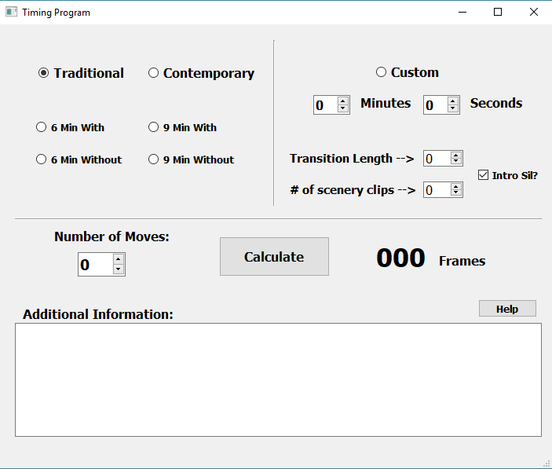

Timing Program
- Built With
- Python 3.5 with the PyQt5 library
- What is it?
-
This is a small app I made for a previous job at a video production company. It was meant to be used by the video editors working there. It is designed to take in a number of pictures being used, length of video, scenery options the company provided and more customized choices. It output the number of frames needed to import each picture into the video editing application so that the video length matched with pre-cut songs.
It was frozen into a single-file .exe with PyInstaller.
Timing Program on Github

Personal Website
- Built With
- HTML, CSS, CSS Grid and some Bootstrap4
- Hosted On
- Github pages. Seriously, it's free and awesome.
- I don't think you need a picture of this one.
Steven Seim

I'm a (constantly) learning developer most proficient in web and python. Completed projects are listed on the left with tools and technologies I used. I'm good with Javascript, HTML, CSS, and Python.
Here is my GitHub